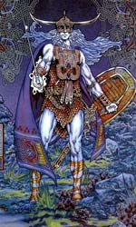

Луг, в ірландській міфології бог світла, пов'язаний з солярним культом. Його завжди зображували молодим красивим воїном. В жилах Луга текла кров фоморов, він онук одноокого ірландського бога Балора, вождя фоморов, які боролися з Племенами богині Дану за владу над Ірландією; за описами, у них була тільки одна рука, одна нога і одне око.
Матір'ю Луга вважалася Етлін, єдина дочка Балора. Батько заточив Етлін в кришталеву вежу на острові Торі у північно-західного узбережжя Ірландії, щоб вона не могла народити йому онука, який, за передбаченням, повинен був убити діда. Але Кіан, син бога лікування Діан Кехт, зумів проникнути до Етлін, і вона народила Луга. Бог моря Мананнан син Лера або, за іншими джерелами, бог-коваль Гоібніу, брат Кіана, врятував Луга від люті Балора і взяв на виховання.
Військова доблесть Луга була відома задовго до вирішальної битви Племен богині Дану з фоморами, а під час другої битви при Мойтуре Луг виконав своє призначення, вразивши Балора каменем із пращі. Луг увійшов до бойового раж до такої міри, що один його очей запал в голову, а другий викотився з орбіти.
Важке повіку єдиного ока Балора піднімали четверо слуг, і, як тільки око відкрився, Луг підкрався до нього з чарівною пращею і метнув камінь з такою силою, що очей вискочив з іншого боку голови Балора і виявився в рядах його війська. Тепер уже фомори відчували на собі руйнівну силу його погляду.
Військова доблесть Луга була відома задовго до вирішальної битви Племен богині Дану з фоморами, а під час другої битви при Мойтуре Луг виконав своє призначення, вразивши Балора каменем із пращі. Луг увійшов до бойового раж до такої міри, що один його очей запал в голову, а другий викотився з орбіти. Важке повіку єдиного ока Балора піднімали четверо слуг, і, як тільки око відкрився, Луг підкрався до нього з чарівною пращею і метнув камінь з такою силою, що очей вискочив з іншого боку голови Балора і виявився в рядах його війська. Тепер уже фомори відчували на собі руйнівну силу його погляду. Луг отримав епітет Ламфада ( "з довгою рукою"). Можливо, велика перемога ознаменувала прихід до влади нового покоління молодих богів, так як юний Луг убив Балора більш досконалим зброєю, ніж кийок Дагда. Не дарма у Луга був ще один епітет, Самілданах ( "майстерний в багатьох ремеслах"). Є відомості, що бог сонця брав участь у битві з загарбницької армією коннахтские королеви Медб, допомагаючи оточеному синові, Кухулину. Після загибелі героя його молочний брат Коналл заявив, що наздогнати вбивць він зміг за допомогою Луга, який вказував йому шлях крізь чарівний туман. За роки досвіду в народному уявленні бог світла перетворився на гнома, зберігача підземних скарбів і вправного чоботаря. Про поширення культу Луга в Галлії свідчать багато назв населених пунктів - Ліон, Лан, Лейден. У валлійської міфології йому відповідає Ллеу, в галльську - Лугос.